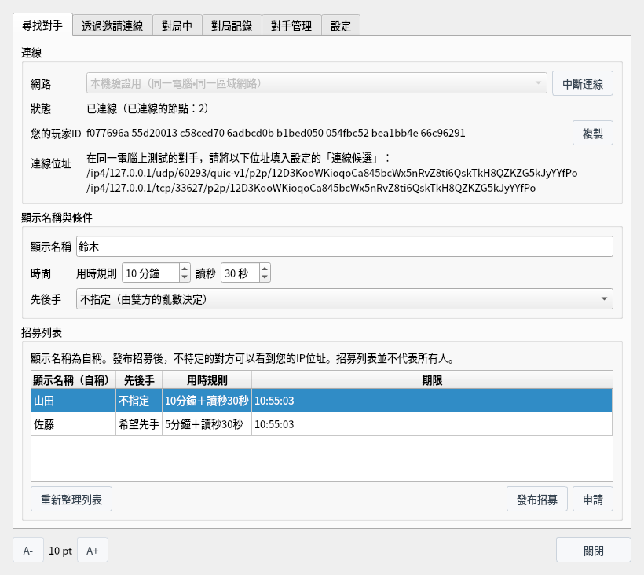

P2P對局（實驗版）
不經過對局伺服器，與對手直接連線下棋，並保存雙方確定了開始與結果的對局記錄
這是實驗中的功能，畫面和規則今後可能會改變。截圖於 Linux 上以繁體中文介面擷取。
什麼是P2P對局
僅將棋盤Q P2P實驗版提供的實驗中的對局功能
P2P對局不像CSA網路對局那樣經過對局伺服器，而是由自己和對手的應用程式直接連線下棋（無法直接連線時使用中繼）。可以把邀請字串交給對手，也可以從公開的招募列表中尋找對手。
對局的開始和結果由雙方的應用程式用本應用程式產生的玩家金鑰自動確定（無需操作）。玩家金鑰的公開金鑰就是您的「玩家ID」。不使用真實姓名或外部服務的帳號。對局結束後，雙方已確定的對局記錄（憑證）會保存在雙方的電腦中，任何人都可以驗證。
P2P對局包含在與一般 ShogiBoardQ 不同的應用程式「將棋盤Q P2P實驗版」（ShogiBoardQ-P2P）中，設定檔和記錄與一般版分開，不會混在一起。從原始碼建置時，在 CMake 中加上 -DENABLE_P2P_PLAY=ON（需要 libsodium 和 Rust，建置步驟見Linux 建置與發布步驟）。
- 支援的作業系統：目前僅支援 Linux。在無法用作業系統功能限制通訊程序（shogiboardq-peer）權限的環境中無法使用。
- 網路：有「本機驗證用（同一電腦・同一區域網路）」和「限定測試用」兩種。加入限定測試時，在「設定」的「連線候選」中填入協作節點的位址。
- 使用期限：自建置之日起超過 180 天後，不再加入限定測試網路。本機驗證網路以及查看、驗證已儲存的記錄在期限後仍可使用。
- 自動化 API：加上
--automation啟動時，無法使用P2P對局。
| 項目 | 規則 |
|---|---|
| 讓子與對局者 | 僅限平手，人與人之間的對局。對局中不能使用研究、詰棋搜尋、棋譜分析和定式顯示。 |
| 用時規則 | 用時（分鐘）和讀秒（秒）。用時由雙方自報，並與對方測得的時間對照。 |
| 先後手 | 雙方的希望一致時依希望決定；選擇「不指定」時由雙方的亂數決定。 |
| 終局 | 認輸、將死、超時負、千日手（和棋）、連續王手千日手（王手方判負）、達到512手（和棋）、協議和棋、協議中斷。 |
| 沒有的規則 | 沒有悔棋和入玉宣言（入玉時可以經雙方同意判為和棋）。 |
準備
開啟P2P對局視窗，產生玩家金鑰並連線網路
從選單列的「對局」中選擇「P2P對局（實驗版）…」，會開啟P2P對局視窗。視窗開啟時也可以操作棋盤和棋譜。

「對局」選單：以「P2P對局（實驗版）…」開啟視窗
在「尋找對手」分頁中選擇「網路」，然後按一下「連線」。第一次連線時會開啟「準備P2P對局」。閱讀下方列出的無法防止的情況後，選擇金鑰的保存方式，按一下「產生玩家金鑰」。
- 作業系統的金鑰庫（建議）：保存在作業系統的金鑰庫（KWallet、GNOME 鑰匙圈等）中。未使用 QtKeychain 建置時無法選擇。
- 用密碼短語加密的檔案：保存在用由密碼短語產生的金鑰加密的檔案中。啟動應用程式後第一次連線時會詢問密碼短語。
- 不加密的檔案：能讀取或帶走此電腦檔案的人可以冒充您進行對局。
金鑰檔案保存在 ~/.local/share/ShogiBoardQ-P2P/p2p/identity。

首次連線時開啟的「準備P2P對局」
連線後，「狀態」會變為「已連線（已連線的節點：N）」，並顯示「您的玩家ID」。在「顯示名稱」中填入給對手看的名稱。顯示名稱為 1〜32 個字元，前後不能有空格，可以使用英文數字、符號、假名、漢字和全形英文數字。
「用時規則」「讀秒」「先後手」會成為邀請字串和招募的條件。在本機驗證網路中與同一電腦上的另一個應用程式測試時，把「連線位址」中顯示的位址填入對方「設定」的「連線候選」。
透過邀請對局
與熟人對局時，只把邀請字串交給對方
在「透過邀請連線」分頁中按一下「產生邀請字串」，即可產生邀請字串。按一下「複製」後，用私訊等只有對方能收到的方式交給對方。邀請字串中包含您的連線位址（IP位址），請不要貼到公開的地方。
邀請字串 10 分鐘後失效，並且只能使用一次。用時規則和先後手使用「尋找對手」分頁中的條件。
被邀請的一方把收到的邀請字串貼到「透過邀請連線」欄中，按一下「檢查邀請字串」。會顯示邀請方的 PeerId、期限和位址數量，確認後按一下「連線」。僅僅連線並不會開始對局，要在接下來開啟的條件確認畫面中確認對手後才開始。
同一區域網路的對手的邀請字串中可能包含私人位址。要連線這些位址時，勾選「允許連線上方的私人位址（同一區域網路的對手）」。

「透過邀請連線」分頁：產生邀請字串（上）・用收到的邀請字串連線（下）
從招募中尋找對手
從同一網路的招募列表中尋找對手，或自己發布招募
連線後，「招募列表」中會列出在同一網路中發布招募的人。按一下「重新整理列表」重新讀取。查看顯示名稱、先後手、用時規則和期限，選擇招募後按一下「申請」。先後手希望不一致的招募無法申請。
顯示名稱是自稱的。招募列表中只列出找到的招募，並不會顯示所有人。


「尋找對手」分頁：連線後招募列表中列出了招募
按一下「發布招募」，會以「顯示名稱與條件」中的顯示名稱、用時規則和先後手發布招募。招募的期限為 2 分鐘，發布期間每 30 秒更新一次。要停止時按一下「撤回招募」。有人申請時，會開啟條件確認畫面。
發布招募後，不特定的對方可以看到您的 IP 位址。不想被看到時，請透過邀請對局，或使用「設定」中的「不使用直接連線」（中繼營運者仍可看到）。
條件確認畫面
開始對局前確認對手和條件
透過邀請連線，或者申請招募、收到申請時，雙方都會開啟「確認P2P對局條件」。「對手」中會完整顯示對手的顯示名稱（自稱）和玩家ID。判斷是否為同一個人時，請看玩家ID，而不是顯示名稱。
| 顯示 | 含義 |
|---|---|
| 尚未驗證對手是否為此ID的持有者。此ID只是對手的自稱。 | 開始手續尚在進行中，玩家ID只是對手報上的值。 |
| 已驗證對手持有此ID的金鑰。 | 對手的應用程式已用此ID的金鑰確定了開始。 |
| 已確認的對手（已用確認碼核對）。 | 在「對手管理」中設為已確認的對手。也會顯示您設定的本機備註名稱。 |
| 首次對局的對手。／與此對手的對局：N局 | 以往的對局數，以及其中結果未確定的對局數。 |
| 與您命名為「…」的對手顯示名稱相同，但玩家ID不同。 | 以紅字顯示。可能是與您命名的對手不同的人。 |
「對局條件與記錄」中會顯示先後手及其決定方式、用時規則、規則以及對局記錄中保存的內容。沒有問題就按一下「開始」。雙方都按下「開始」後對局開始。按一下「取消」，或 60 秒內雙方沒有都開始，就會取消（剩餘秒數顯示在下方）。

條件確認畫面（驗證對手之前）
對局中
在主視窗的棋盤上走棋，在「對局中」分頁中認輸或提出提議
對局開始後，使用主視窗的棋盤、棋譜和對局時鐘。「對局資訊」中會填入雙方的顯示名稱和對局ID。執後手時，棋盤會自動翻轉，從自己一方觀看。
您走的棋要等對手的應用程式收到並確認後才會落在棋盤上（期間顯示「正在等待著手確認…」）。不能悔棋。

對局中的主視窗（到第14手）
「對局中」分頁中會顯示對手、先後手、路徑（直接或中繼）、輪到誰走以及斷線時間剩餘。
- 認輸：輪到自己走棋時可以按下。
- 提議和棋・提議中斷：詢問對手是否接受。只有對手接受時，才成為協議和棋或協議中斷。被拒絕時對局繼續。
- 退出對局（結果未確定）：單方面離開對局。結果不會確定，對手會收到中斷通知。

「對局中」分頁
因認輸、將死、超時負等終局後，雙方的應用程式會對照結果（勝負、結束方式和手數），一致時自動用玩家金鑰確定。無需操作（期間「對局中」分頁顯示「正在確定結果…」）。雙方都確定後，記錄成為「雙方已確定」。若 30 秒內沒有收到對手的確定，則儲存為「無對手確定」。
線路中斷時，應用程式會自動重新連線（顯示「正在重新連線（剩餘 N 秒）」）。斷線期間輪到走棋一方的時鐘繼續計時，輪到走棋的一方仍可走一步棋（恢復連線後傳送）。
120 秒內無法恢復連線時，對局以「通訊中斷（結果未確定）」結束。一局的斷線時間總計超過 10 分鐘時也會中斷。由於無法區分自己線路的故障和對手的故意斷線，斷線不會被視為對手輸棋。
應用程式或通訊程序結束、電腦進入睡眠時，無法回到同一局對局（結果未確定）。
對局記錄與驗證
已結束對局的記錄（憑證）保存在雙方的電腦中，任何人都可以驗證
已結束的對局會列在「對局記錄」分頁中。「結束方式」是在自己的應用程式中結束的方式，「記錄類別」是驗證憑證的結果。
| 記錄類別 | 含義 |
|---|---|
| 雙方已確定 | 雙方的玩家金鑰都確定了同一結果。只有這個類別能表明雙方同意了同一結果。 |
| 由棋譜決定的結果 | 結果的確定不齊全，但到雙方的應用程式都已驗證的最後局面為止的棋譜已決定了將死、千日手、連續王手千日手或達到512手。 |
| 結果未確定 | 兩者都不是。例如認輸或超時負之後沒有收到對手的確定，或對局被中斷時。 |
憑證保存在 ~/.local/share/ShogiBoardQ-P2P/p2p/evidence。對局中應用程式結束時，到那時為止的記錄會在下次開啟時作為「結果未確定」的記錄保留。

「對局記錄」分頁：雙方已確定的記錄
按一下「驗證」，會顯示玩家金鑰的確定是否正確、棋譜是否符合規則、自報用時的計算是否一致、結果是否由棋譜決定，以及記錄類別。用「匯出憑證…」可以把憑證檔案（.sbqmatch）儲存到任意位置。「刪除記錄」會刪除本機的憑證（無法復原）。
記錄不能證明實際思考時間、是否由人類下棋以及對局日期。
也可以不啟動 GUI，用 shogiboardq-cli 的 verify-match 驗證憑證檔案。結果以 JSON 輸出（下面的範例經過整理以便閱讀，並省略了較長的 ID）。
$ shogiboardq-cli verify-match --input-path ~/game.sbqmatch
{
"black_player_id": "4b8788e2…",
"byoyomi_ms": 30000,
"category": "mutually_signed",
"checks": {
"clock_arithmetic": true,
"conditions_match": true,
"record_legal": true,
"result_conflicts_with_record": false,
"result_refers_to_record": true,
"signatures": true,
"start_signatures": true
},
"game_id": "c62a566e…",
"last_confirmed_ply": 15,
"main_time_ms": 600000,
"network": "sbq-local-1",
"network_id": "83cc9dfd…",
"not_verifiable": [
"actual_thinking_time",
"human_play",
"date_played"
],
"ok": true,
"result": {
"black_signed": true,
"cause": "resign",
"outcome": "black_wins",
"ply": 15,
"result_digest": "a6cec2cd…",
"white_signed": true
},
"states": 16,
"valid": true,
"white_player_id": "8a3569db…"
}valid 為 true 表示玩家金鑰的確定和記錄的結構正確，category 是記錄類別（mutually_signed 為「雙方已確定」，determined_by_record 為「由棋譜決定的結果」，unconfirmed 為「結果未確定」）。not_verifiable 列出從此記錄無法確認的內容（實際思考時間、是否由人類下棋、對局日期）。
對手管理與設定
為對局過的對手命名，並用確認碼確認是否為同一個人
對局過的對手依玩家ID列在「對手管理」分頁中。任何人都可以使用相同的顯示名稱，因此請用玩家ID判斷是否為同一個人。
- 命名…：為對手設定的本機備註名稱。不會顯示給對手，也不寫入棋譜，會顯示在條件確認畫面和對局記錄中。
- 確認碼…：由雙方玩家ID產生的 30 位數字。雙方看到的數字相同，請透過電話或當面等其他途徑核對，一致後按一下「設為已確認」。
- 封鎖：拒絕該對手的申請和連線。對方會被告知您正在與他人協商或對局。
- 刪除記錄：刪除該對手的名稱、已確認、封鎖和對局數的記錄。
任何人都可以免費重新產生玩家金鑰，因此封鎖和過去的成績可以透過重新產生來規避。

「對手管理」分頁：已命名並用確認碼設為已確認的對手
- 連線候選：每行填入一個協作節點位址（/ip4/…/p2p/… 形式）。
- 不使用直接連線：僅使用中繼，對對手隱藏 IP 位址。中繼營運者仍可看到。
- 不顯示未對局過的對手的顯示名稱：在招募列表、條件確認畫面和對局記錄中，把首次對局對手的顯示名稱顯示為「名稱已隱藏」。
- 重新產生玩家金鑰…：玩家ID會改變，對手會把您視為另一個人。舊金鑰將被刪除。
下方顯示玩家金鑰的保存方式、對通訊程序施加的權限限制（Landlock、seccomp 等）以及此版本的使用期限。

「設定」分頁
無法防止的情況與對方可以看到的資訊
使用實驗版P2P對局前請先了解
- 顯示名稱：顯示名稱為自稱。確認對手的依據是玩家ID和確認碼。
- 確定結果：若輸方的應用程式不確定結果（例如中途結束應用程式、中斷連線或使用改造過的應用程式），就不會留下雙方確定的記錄。
- 用時：用時為自報。無法識別每步最多 10 秒的虛報，以及利用斷線拖延時間（每局合計最多 10 分鐘）。
- 引擎與串通：無法識別由引擎下的對局或串通的對局。雙方也可以串通確定虛構的結果。
- 玩家金鑰：無法防止以同一使用者權限執行的惡意程式竊取玩家金鑰。
請不要把記錄的勝局數作為正式等級分或棋力的依據。
| 誰 | 可以看到的內容 |
|---|---|
| 對局對手 | IP 位址（直接連線時）、玩家ID、顯示名稱、條件 |
| 查看招募的人（不特定） | 發布招募者的 IP 位址、顯示名稱和條件。假裝申請還能得知玩家ID |
| 收到對局記錄（憑證）的人 | 雙方的玩家ID、條件、全部著手與自報用時、雙方確定的結果。不保存顯示名稱、IP 位址和本機備註名稱 |
本應用程式不會公開對局記錄，也不會把它傳送到任何地方。